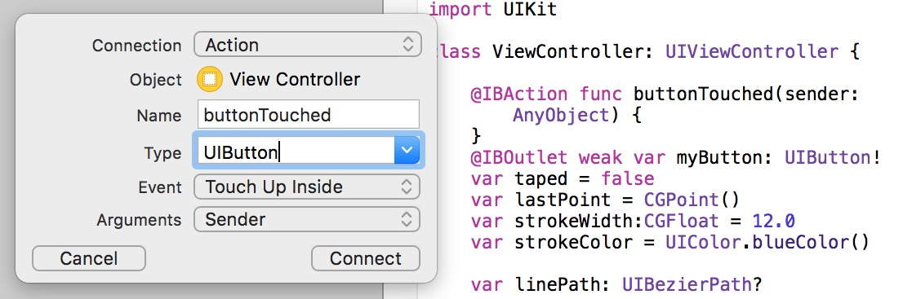
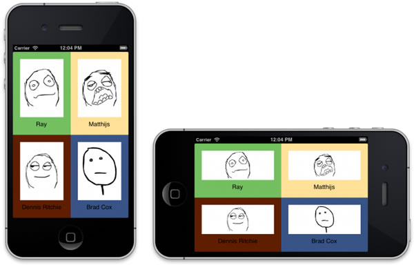

CS333
Mobile Development
Ilya Loshkarev loshkarev.i@gmail.com
Overview

Views
UIView
- Defines a rectangular area
- Renders its Content
- May contain Subviews
- Manages Resizing Behaivour
- Recieves User Input

UIView Properties
// Defines position of the view in it's parent
var frame: CGRect
// Defines bounding rectangle for view's content
var bounds: CGRect
// Array of all subviews contained in the view
var subview: [UIView]
UIView Subclasses
| UILabel | displays static text |
|---|---|
| UIImageView | displays an image or an animated sequence of images |
| UIScrollView | lets the user choose between certain options |
UIControl

UIControl Subclasses
| UIButton | lets a user initiate behavior with a tap |
|---|---|
| UITextField | allows the user to input a single line of text |
| UISwitch | lets the user turn an option on and off |
| UISlider | enables users to interactively modify some adjustable value |
| UIDatePicker | is used for selecting a specific date, time, or both |
UIControlEvents
- touchDown
- touchDownRepeat
- touchUpInside
- touchUpOutside
- valueChanged
- editingDidEnd
- allEvents
- ...
Event Target
button.addTarget(self,
action: #selector(buttonTouch(sender:)),
for: .touchUpInside)
Target — the object whose method is called
Action — the method of the object that is called
View Controllers
UIVewController
- Manages a set of views that makes up user interface
- Loads and Disposes Views
- Manages User Interactions

View Stack

View State Changes
// Initiate View
loadView()
// View has been Initiated
viewDidLoad()
// View State Transitions
viewWillAppear()
viewDidAppear()
viewWillDisappear()
viewDidDisappear()
// View Size Changes
viewWillTransition(to:with:)
Presenting
Navigation Controller
 Allows users to navigate to the previous view
Allows users to navigate to the previous view
Navigation Bar
- left button
- title
- right button
- promt string

Tab Bar Controller

Provides easy access to different views in an app
Each view can be a start of separate view stack
Table View Controller
- Can be divided into sections
- Each section contains
any number of cells - Has default editing
and deleting behaviour
Collection View Controller
- Each cell can have different size and content
- Layout manages cells dimentions and distribution

Storyboards
XIB Files
- XML represntation of a view hierarchy
- Is attached to a specific view or controller class
Scenes
- A scene represents an onscreen content area
- usually a single
View Controller

Designing with Storyboard
- Storyboards allow to graphically lay out
the user’s path through the app

Segues

A segue represents the transition from one scene
to another
Segue Types
| Show |  |
Push on top of main stack |
|---|---|---|
| Show Detail | |
Push on top of detail stack |
| Present in Popover |  |
Show in popover view |
| Present Modally |  |
Show on top of current root view |
| Custom | 
| Custom Segue |
Using the Segues
// Allows to make changes to the controllers before segue is performed
func prepare(for: UIStoryboardSegue, sender: Any?)
// Performs segue with specific identifier
func performSegue(withIdentifier: String, sender: Any?)
// Determines if the specific segue should be performed
func shouldPerformSegue(withIdentifier: String, sender: Any?)
Each segue has an identifier to distinguish it in storyboard
Outlets

Connects storyboard item to the code
@IBOutlet weak var myButton: UIButton!
Actions
Connects event handler to a control
@IBAction func buttonTouched(sender: UIButton) { }
Connections
- List of all objects
connected to the UI element - Element must be removed from connections
when deleted

Storyboard vs XIB
XIB
- Single scene
- A file for every scene
- Manual scene transition
Storyboard
- Multiple scenes and segues
- Can be slow and heavy
- Not well-suited for collaborative development
Auto Layout
Purpose

Auto Layout provides a set of constraints
to describe position and size of a view
in relation to its surrondings
Attributes
- Top
- Bottom
- Leading
- Trailing
- Width
- Height
- Center X
- Center Y
- Baseline
Every view has 9 layout attributes
Anatomy of Constraint

- Every constraint describes relationship between two attributes
- A set of constraints provide a system of linear equations
Constraints at Runtime
// Remove automatic constraints
button.translatesAutoresizingMaskIntoConstraints = false
// Create new constraints
var constraints = [
// Only views in the same view heirarchy can be constrained
button.topAnchor.constraint(equalTo: inputLabel.bottomAnchor),
button.leadingAnchor.constraint(equalTo: view.leadingAnchor),
button.widthAnchor.constraint(equalTo: view.bounds.width,
multiplier: 1 / buttons.count)
]
// Activate the constraints
NSLayoutConstraint.activate(constraints)
Autoresizing Mask
view's resizing behaviour
Alignment Constraints

Pinning Constraints

Debugging Constraints
- Warnings can be resolved automatically by either fixing view, or modifing constraints
-
Errors could only be resolwed by a programmer:
- Unsatisfiable Layouts: your layout has no valid solution
- Ambiguous Layouts: your layout has two or more possible solutions
- Logical Errors: there is a bug in your layout logic
Stack View
for simplified layout

Intrinsic Content Size

-
Content hugging pulls the view inward
so that it fits snugly around the content -
Compression resistance pushes the view outward
so that it does not clip the content
Gestures
UIEvent
- Motion Event
- Touch Event
- Physical Button
- Remote Event
UIResponder
An abstract interface for responding to and handling events
// Recieve touch
touchesBegan(_:with:)
touchesMoved(_:with:)
touchesEnded(_:with:)
// Recieve motion
motionBegan(_:with:)
motionEnded(_:with:)
// Physical button pressed
pressesBegan(_:with:)
pressesChanged(_:with:)
pressesEnded(_:with:)
// Reset recognition process
reset()
Gesture Recognizers

UIGestureRecognizer
- UITapGestureRecognizer
- UISwipeGestureRecognizer
- UIPanGestureRecognizer
- UIPinchGestureRecognizer
- UIRotationGestureRecognizer
- UILongPressGestureRecognizer
Adding Gesture Recognizers
let recognizer = UISwipeGestureRecognizer(target: self,
action: #selector(swipeGesture(sender:)))
recognizer.direction = .down
view.addGestureRecognizer(recognizer)
Recognizer States

Custom Gesture Recognizers
override func touchesEnded(_ touches: Set<UITouch>,
with event: UIEvent?) {
super.tochesEnded(touches, with: event)
if state == .possible && someCondition {
state = .recognized // gesture is recognized
} else {
state = .failed // recognition failed
}
Shake Recognition
override var canBecomeFirstResponder: Bool { return true }
override func viewDidAppear(_ animated: Bool){
self.becomeFirstResponder()
}
override func motionEnded(_ motion: UIEventSubtype,
with event: UIEvent?) {
if motion == UIEventSubtype.motionShake { doTheShake() }
}
Custom Views
View Architecture
Every view has underlying Core Animation Layer
-
UIView– defines a rectangular region on the screen and handles the drawing and touch events -
CALayer– manages graphical properties of the view and handles view-related animations
Stylish Button
override func viewDidLoad(){
super.viewDidLoad()
myButton.backgroundColor = UIColor.blackColor()
myButton.tintColor = UIColor.whiteColor()
myButton.layer.cornerRadius = 6
}
Some basic properties of a view can be set in
the Interface Builder
Overriding Default Button
class MyButton: UIButton {
func stylize(){
self.backgroundColor = UIColor.blackColor()
self.tintColor = UIColor.whiteColor()
self.layer.cornerRadius = 6
}
override init(frame: CGRect){
super.init(frame: frame)
stylize()
}
// ... required methods
}
Overriding Default Button : 2
Assign your custom class to a button
You should get mixed results:
button will look the same in IB,
but look as expected in simulator
Rendering in IB
@IBDesignable
class MyButton: UIButton {
// The following is only executed in the IB
override func prepareForInterfaceBuilder() {
super.prepareForInterfaceBuilder()
// IB tends to override some properties set in viewDidLoad ???
self.backgroundColor = UIColor.blackColor()
}
}
@IBDesignable shows that class is suitable for instancing in
the Interface Builder
Custom Properties in IB
@IBDesignable
class MyButton: UIButton {
@IBInspectable var cornerRadius: CGFloat {
get{ return layer.cornerRadius }
set{ layer.cornerRadius = newValue }
}
}
@IBInspectable allows property to be set from
the Interface Builder
Custom Button
@IBDesignable
class RoundButton: UIButton {
override func drawRect(rect: CGRect) {
var path = UIBezierPath(ovalInRect: rect)
// set fill color
bacgroundColor.setFill()
// fill previously defined path
path.fill()
}
}
All the drawing happens in the view's graphic context